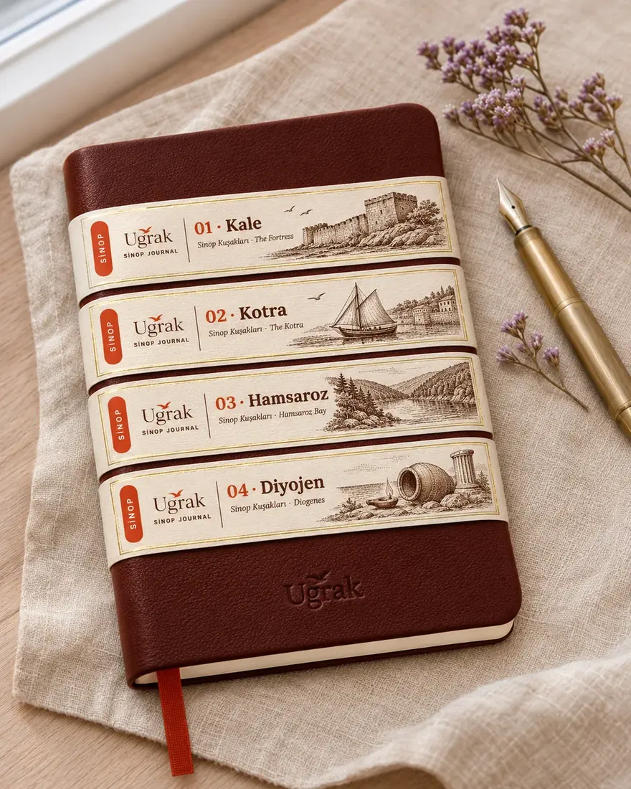

Hikâyemiz · Sinop'ta doğduk
Uğramak, yolun üstünde durup gerçekten bakmak demek.
Bir şehri gezerken etrafımıza bakmayı unutuyoruz. Uğrak, dikkatimizi yeniden bulunduğumuz yere çevirmek için var. Her şehri baştan araştırıyoruz; gravürleri o şehir için çiziliyor, hiçbiri başka şehirden devşirilmiyor.

Kâğıt seri
Deri kapaklı basılı defter
Sinop Journal'ın iplik dikişli basılı hâli ve takılan kuşakları ilk baskıya hazırlanıyor. Tarih vermiyoruz; elimize geldiğinde duyuracağız.
Haber ver →Kurumsal hediye
Kurumunuz için şehrinden bir hediye
Valilik, belediye, otel ve şirketler için kişiselleştirilmiş şehir defteri, ajanda ve çocuk defteri. Numuneyi getiririz.
Teklif iste →